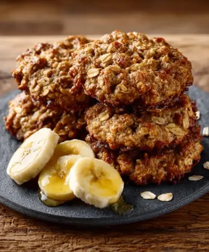
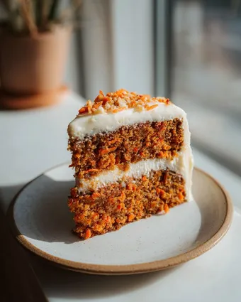

Galletas de avena y plátano
Sin gluten, sin azúcar y sin huevo. Una receta fácil, nutritiva y deliciosa, perfecta para preparar una merienda sencilla en poco tiempo.
Dificultad: Baja
Tiempo: 20 minutos
En esta sección encontrarás una pequeña selección de recetas sin gluten pensadas para disfrutar de la cocina de forma sencilla, sabrosa y apta para personas celíacas.

Sin gluten, sin azúcar y sin huevo. Una receta fácil, nutritiva y deliciosa, perfecta para preparar una merienda sencilla en poco tiempo.
Dificultad: Baja
Tiempo: 20 minutos
Una pizza casera sin gluten, con una masa esponjosa, sabrosa y fácil de preparar. Una opción ideal para disfrutar de una receta clásica adaptada a una alimentación apta para personas celíacas.
Dificultad: Baja
Tiempo: 30 minutos

Una carrot cake sin gluten de miga suave, húmeda y esponjosa, elaborada con ingredientes sencillos y rematada con un frosting cremoso que la convierte en una opción perfecta para una ocasión especial.
Dificultad: Baja
Tiempo: 50 minutos